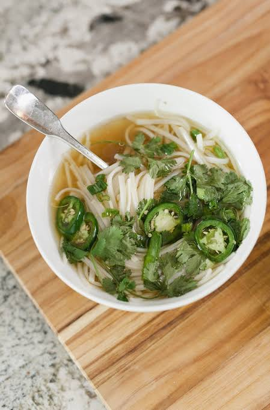

Home
Pho Recipe

Description
Pho is a traditional vietnamese beef noodle soup dish prepared by slowly simmering beef bones and select cuts of beef over a long period of time.
This process extracts all the fatty richness from the marrow of the bones, while also pulling the meaty flavor from the beef.
These flavors are further enhanced with the signature aromas of star anise, corriander, cardamom, and other carefully picked spices to bring about
the hearty yet comforting dish people love.
Ingredients
This is a party sized recipe, which prepares roughly 20 bowls of pho.
For the Broth
- 13L Filtered Water (split into 2 parts 9L & 4L)
- 10lb Shank
- 2 Bags of Beef Bones (50/50 marrow & knuckles)
- 3 Large onions
- 5 Large 2 Inch Pieces of Ginger Halved
- 4tbsp Coriander
- 4 Cardamom pods
- 4 Cinnamon sticks
- 20 Star Anise
- 4tbsp MSG (trust, it is necessary)
- 6 tbsp Salt
- 6tbsp Fish Sauce
- 50g Yellow Rock Sugar
Remaining Ingredients & Garnish
- Green Onion
- Cilantro
- Lime
- Thai Basil
- Bean Sprouts
- Rice Noodles (about 5lb)
- Meat Balls with Tendon (optional)
Instructions
- This first parboil step is optional but highly recommended. It is to remove impurities for a cleaner broth. Add shank and bones to the pot and bring to a boil. Boil for 5-10 mins then discard water. Rinse meat and bones and return them to the pot.
- Add 9L of filtered water to the pot and bring to a boil, then reduce to a gentle simmer.
- This step can be done during steps 1 and 2 while waiting for the pot to boil. Cut onions into quarters and ginger into halves. Place all the pieces on to a baking sheet and broil for 10 minutes. Flip the onion and ginger and broil for another 5-10 minutes or until well charred. Add everything to the pot, charred pieces and all.
- Simmer pot for 2 hours. Skim fat/impurities off the top periodically.
- Check the shank. Meat should be tender and tendon should be very soft without much chew (defintely taste a piece). If meat is not ready, check back every 30 mins until done. Remove shank and store in the fridge.
- Continue simmering for 2 hours after removing shank, periodically skimming fat off the top.
- In a separate pan, add 4tbsp coriander, 4 cardamom pods, 4 cinnamon sticks, and 20 star anise. Roast these spices until they become fragrant and begin smoking. Transfer all spices to a disposable tea bag or tie them in cheese cloth. Add the spice bag to the pot. Simmar an aditional 1 hour.
- Remove all bones and spice bag from pot. Strain the broth well.
- Add 4L of filtered water, 4tbsp MSG, 6tbsp fish sauce, and 50g yellow rock sugar. Adjust to taste. The broth is finished!
- Meat balls with tendon can be added to pot to heat before serving.
- bring shank out of the fridge and slice thin.
Serving
- Cook rice noodles per instructions on packaging
- To the serving bowl, add cooked noodles sliced shank, meat balls and broth.
- Garnish with green onion, cilantro, lime, thai basil, and bean sprouts.